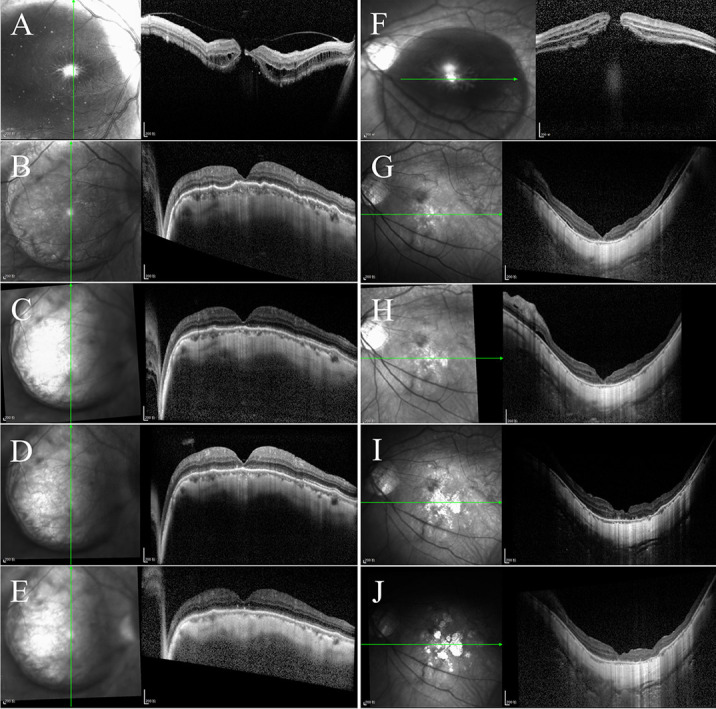
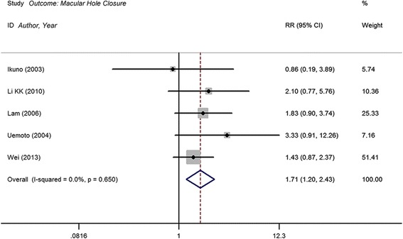
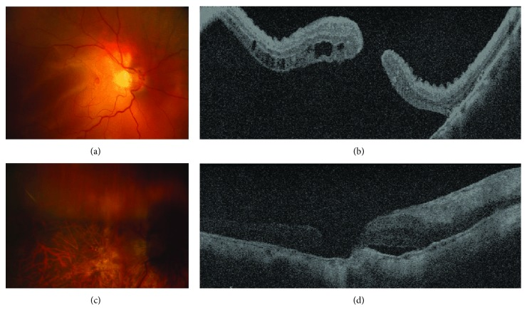
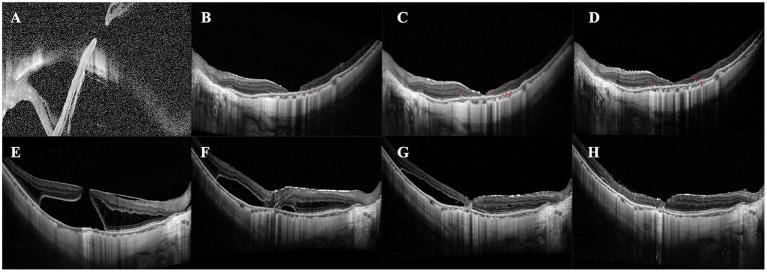

1878 — Bong võng mạc do lỗ hoàng điểm trên mắt cận thị nặng: đai hoàng điểm (macular buckle) hay cắt dịch kính? AL 26,5 mm và thất bại 4% so với 25%
Tags: pattern:lo-hoang-diem pattern:bong-vong-mac pattern:bong-hoang-diem pattern:lom-hac-mac pattern:retinoschisis pattern:co-keo-truoc-sau vung:hoang-diem vung:vong-mac vung:hac-mac vung:cung-mac protocol:OCT protocol:B-scan protocol:PPV protocol:ILM-flap protocol:macular-buckle score:MSS
Mức chắc chắn (certainty): tổng hợp y văn (literature synthesis) — ghép ca nguyên văn có ảnh (võng mạc áp sau 3 ngày với đai không khâu, PMC5376471, CC BY 4.0; B-scan thấy lõm hắc mạc phẳng lại sau đai, PMC11350928, CC BY 4.0; hai kiểu hồi phục sau vạt ILM đảo, PMC8733330, CC BY 4.0), RCT 49 mắt đai so với cắt dịch kính (PMC8961764, CC BY-NC), phân tích gộp 373 bệnh nhân (PMC4906693, CC BY 4.0), so sánh 29 mắt vạt ILM so với bóc ILM (PMC12218004, CC BY 4.0), và hệ phân giai đoạn MSS tổng hợp 281 mắt + theo dõi 126 mắt trong 11 năm (tóm tắt trong PMC7646438, CC BY-NC). Phần “chọn đai hay cắt dịch kính” là tổng hợp có suy luận từ các nguồn trên, đã ghi rõ chỗ chưa có bằng chứng.
Câu chốt: ở mắt cận thị nặng, cái kéo võng mạc ra khỏi hõm không phải màng trước võng mạc mà là lõm hắc mạc sau cực (posterior staphyloma) — tức lực trước–sau (anteroposterior traction) không sửa được bằng cách mổ từ bên trong (ab interno). Vì thế trong RCT 49 mắt, thất bại sau mổ đầu tiên của cắt dịch kính là 25,00% còn của đai hoàng điểm (macular buckle, MB) là 4,00% (p = 0,04), dù tỷ lệ đóng lỗ lại tương đương (58,33% so với 64,00%, p = 0,45) (PMC8961764). Nghĩa là: đai chữa bong, vạt ILM đảo chữa lỗ — hai việc khác nhau, và mắt khó thường cần cả hai.
Phân vai với bài khác: 1879 phủ lỗ xuất hiện SAU khi võng mạc đã áp (chờ hay mổ, mốc MLD 250 µm); 445 phủ bong võng mạc có lỗ ngoại vi; 1429 phủ lỗ thất bại điều trị (màng ối, ART); 1467 phủ màng trước võng mạc; 1877 phủ PFCL tồn lưu; 1490 phủ sinh trắc sai khi có khí. Bài này trả lời một câu duy nhất: lỗ hoàng điểm + bong võng mạc cùng lúc trên mắt cận thị nặng — chọn đường vào nào, và vì sao kỹ thuật trong mắt không đủ.
1. Tổng quan bệnh học – cơ chế hình ảnh (TẠI SAO lỗ ở hõm lại kéo cả vùng hoàng điểm bong, và TẠI SAO mổ từ bên trong lại thất bại)
1.1 Ba con số định nghĩa và ba con số dịch tễ
| Đại lượng | Ngưỡng / giá trị | Nguồn |
|---|---|---|
| Cận thị nặng (high myopia) | SE ≤ −6,00 D hoặc AL > 26,5 mm | PMC7646438 |
| Tiêu chuẩn vào RCT đai so với cắt dịch kính | AL > 26,5 mm hoặc SE < −8,00 D + lỗ toàn bộ + bong hoàng điểm + lõm hắc mạc lan tới hoàng điểm | PMC8961764 |
| Nguy cơ bong võng mạc ở cận thị nặng | OR 12,62 (95% CI 6,65–23,94) so với không cận | PMC7401976 |
| Tổn thương võng mạc trên OCT ở 125 mắt cận thị nặng | 34,4% (co kéo màng trước võng mạc 46,4%) | PMC7646438 |
| Diễn tiến tự nhiên 207 mắt theo dõi ≥ 24 tháng | 11,6% tiến triển MTM; 3,9% maculoschisis giảm hoặc hết | PMC7646438 |
| Thất bại mổ đầu tiên của cắt dịch kính ở mắt có lõm hắc mạc | 26,7–50% | PMC11350928 |
Điểm cần nhớ: bong võng mạc ở mắt cận thị nặng gấp ~12 lần mắt không cận, nhưng không phải mọi bong đều do lỗ ngoại vi. Khi bong khu trú sau cực, nằm gọn trong lõm hắc mạc, và có lỗ toàn bộ ở hõm → đây là MHRD, một thực thể có chiến lược riêng.
1.2 Bốn lực — và vì sao “ab interno” không giải quyết được lực quan trọng nhất
- Lực trước–sau do lõm hắc mạc (anteroposterior traction from staphyloma). Củng mạc sau cực mỏng, giãn, lồi ra sau thành túi lõm. Khi mắt vận nhãn hoặc khi có chênh áp, đáy túi di chuyển theo trục trước–sau → võng mạc bị nhấc lên khỏi RPE đúng ở đỉnh lõm. Đây là lực vuông góc với mặt phẳng võng mạc, nên bóc màng trong mắt không chạm tới được. Chính vì vậy y văn ghi cắt dịch kính ở mắt có lõm hắc mạc thất bại 26,7–50% (PMC11350928), và RCT cho 25,00% so với 4,00% (PMC8961764).
- Lực tiếp tuyến (tangential traction) của màng trước võng mạc/bề mặt ILM. Ở mắt cận thị nặng, ILM dày và cứng hơn (thay đổi collagen), màng trước võng mạc hình thành sớm. Lực này kéo hai bờ lỗ xa nhau — nó là lý do bóc ILM (cắt lực tiếp tuyến) làm tăng tỷ lệ đóng lỗ: RR 1,71 (95% CI 1,20–2,43; p = 0,003) cho đóng lỗ và RR 1,19 (1,04–1,36; p = 0,012) cho áp võng mạc, trên 7 nghiên cứu / 373 bệnh nhân (PMC4906693).
- Võng mạc mỏng + RPE–hắc mạc thoái hóa. Võng mạc ở hõm bình thường chỉ dày ~0,25 mm; ở mắt cận thị nặng còn mỏng hơn, mật độ tế bào Müller và tế bào cảm thụ giảm, dòng bơm dịch của RPE yếu → cùng một lỗ, mắt cận thị nặng bong nhiều hơn và lâu áp hơn.
- Maculoschisis (retinoschisis) quanh hoàng điểm. Lớp võng mạc tách dọc trong chính võng mạc (inner/outer schisis) làm võng mạc mất tính liên tục cơ học; khi schisis vỡ vào hõm → lỗ; khi dịch schisis thoát xuống dưới → bong. Đây là lý do MHRD gần như luôn đi kèm schisis trong các loạt lớn (PMC11350928, PMC8917523).
1.3 Hệ phân giai đoạn MSS — “đồng hồ” của bệnh, không phải nhãn mô tả
Parolini và cs. dựng hệ phân giai đoạn myopic traction maculopathy (MTM staging system, MSS) từ OCT của 281 mắt, rồi theo dõi 126 mắt trong 11 năm (tóm tắt trong PMC7646438). Hai trục:
- Trục võng mạc (retinal pattern), giai đoạn 1 → 4: 1 schisis lớp trong (I-MS) hoặc trong + ngoài (IO-MS) → 2 schisis chủ yếu lớp ngoài (O-MS) → 3 schisis kèm bong hoàng điểm (MS-MD) → 4 bong hoàng điểm thuần (MD).
- Trục hõm (foveal pattern), a → c: a đường viền hõm bình thường → b lỗ tầng trong (I-LMH) → c lỗ toàn bộ (FTMH). Kèm “O” nếu có lỗ tầng ngoài và “+” nếu có bất thường màng trước võng mạc.
MHRD = giai đoạn 4c (bong hoàng điểm + lỗ toàn bộ) — hoặc 3c khi còn schisis quanh.
Ba con số biến hệ này thành công cụ lâm sàng (PMC7646438):
| Bước chuyển | Thời gian trung bình |
|---|---|
| Giai đoạn 1 → 2 | 20 tháng |
| Giai đoạn 2 → 3 | 12 tháng |
| Giai đoạn 3 → 4 | 3 tháng |
→ Bệnh tăng tốc: từ lúc bong hoàng điểm có schisis tới bong hoàng điểm thuần chỉ 3 tháng. Đây là căn cứ định lượng cho câu “thấy bong là mổ, đừng chờ” — khác hẳn lỗ hoàng điểm nguyên phát không bong (bài 1879 có thể theo dõi 2–3 tháng).
1.4 Vật lý OCT/B-scan: vì sao phải có EDI/SS-OCT và vì sao vẫn cần B-scan
- OCT hoàng điểm thường (SD-OCT ~840 nm) không xuống đủ sâu ở mắt có lõm hắc mạc lớn: đáy hốc nằm ngoài độ sâu hiển thị (imaging depth) → ảnh “cụt đáy”. Đây chính là lý do ca PMC5376471 ghi “hốc củng mạc sau quá sâu để chụp được” và phải dùng B-scan để thấy toàn bộ lõm. Hai cách khắc phục: EDI (enhanced depth imaging) — đẩy mặt phẳng lấy nét ra sau, và SS-OCT (~1.050 nm) — bước sóng dài xuyên sâu hơn, tốc độ quét nhanh hơn.
- Lỗ toàn bộ = mất liên tục từ ILM đến RPE → khoang trống/đen, bờ là vách mô dày. Đây là chốt hình ảnh; “khuyết một phần” không phải lỗ toàn bộ.
- Dịch dưới võng mạc (SRF) = nước, không tán xạ → khoang giảm phản xạ, bờ dưới là RPE tăng phản xạ — khác schisis (khoang giảm phản xạ nằm trong võng mạc, còn vách và còn dải lớp hai bờ).
- Gliosis/mô đệm (sau khi lỗ đóng) = tế bào Müller + collagen → tăng phản xạ trung bình, lấp đầy khuyết. Vì vậy “lỗ đóng” trên OCT ở mắt cận thị nặng thường là lỗ đóng bằng mô đệm, không phải hõm phục hồi — và EZ/ELM vẫn đứt.
- Hyperreflective foci ở lớp võng mạc ngoài (mũi tên đỏ trong PMC8733330 Fig 3) = tế bào viêm/sắc tố hoặc mảnh tế bào cảm thụ — dấu tổn thương đang hoạt động ở lớp ngoài; gặp trong cả hai kiểu hồi phục.
- B-scan 10 MHz: đo độ sâu lõm hắc mạc, AL, và xác nhận áp võng mạc khi OCT bị chặn (đục thể thủy tinh, dầu, lõm quá sâu). Sau đai, B-scan thấy lõm phẳng lại — đây là bằng chứng cơ học rằng đai đã tác động đúng chỗ (PMC11350928 Fig 3).
1.5 Vì sao đai hoàng điểm hạ được AL — và vì sao điều đó chữa bong
Đai là vật liệu độn ép củng mạc từ ngoài vào (ab externo) tại cực sau, thường luồn dưới cơ chéo dưới và cơ chéo trên, đầu đai nằm dưới hoàng điểm. Ba hiệu ứng đo được:
- Làm phẳng lõm hắc mạc → lực trước–sau mất chỗ bám (B-scan: lõm phẳng, PMC11350928).
- Rút ngắn AL: loạt 25 mắt đai hình T: AL 28,5 mm → 26,2 mm (PMC8917523); loạt 8 mắt đai đầu ốc: 28,44 → 27,60 mm (p = 0,016) (PMC6874173).
- Tạo “dome-shaped macula” nhân tạo — chính dạng vồi lồi này được xem là yếu tố bảo vệ tự nhiên ở mắt cận thị nặng, nên đai “bắt chước” cơ chế bảo vệ có sẵn (PMC7646438).
2. Mẫu hình + chẩn đoán phân biệt theo vị trí và bối cảnh (gamut)
2.1 Mẫu hình chốt — “lỗ trung tâm + bong khu trú trong lõm + schisis quanh”
Bộ ba của MHRD:
- Lỗ toàn bộ ở hõm, thường bờ cứng, ít dịch quanh bờ (khác lỗ thứ phát sau mổ bong võng mạc có cuff rõ — bài 1879);
- Bong hoàng điểm khu trú, không vượt quá cung mạch ở đa số ca (tiêu chuẩn loại của RCT: bong lan ra ngoài cung mạch ở > 1 góc phần tư là không phải MHRD điển hình — PMC8961764);
- Lõm hắc mạc sau cực + schisis quanh hoàng điểm (thường lớp ngoài ở giai đoạn muộn).
2.2 Gamut theo bối cảnh — “lỗ hoàng điểm + bong trên mắt cận thị” gồm 7 thực thể
- A. MHRD thật (bài này): lỗ toàn bộ + bong trong lõm + schisis; AL > 26,5 mm; điều trị đai ± vạt ILM.
- B. Bong võng mạc có lỗ ngoại vi + lỗ hoàng điểm tình cờ: bong lan tới ngoại vi, có lỗ rách/đứt ora; bịt lỗ hoàng điểm là sai thứ tự — phải xử lý lỗ ngoại vi (bài 445).
- C. Bong co kéo (tractional RD) do tăng sinh: có màng tăng sinh co kéo (đái tháo đường, ROP), bong căng, không di động, không có lỗ đơn độc.
- D. Bong hoàng điểm KHÔNG có lỗ (MS-MD, giai đoạn 3 / 4-a): dịch dưới võng mạc nhưng ILM–RPE còn liên tục. Điều trị: đai đơn thuần (không cần bịt lỗ) — đây là ca thứ ba của PMC11350928 (lỗ tầng trong + bong, đai đơn thuần, phẳng lõm sau mổ).
- E. Lỗ hoàng điểm cận thị KHÔNG bong: theo dõi/bóc màng hoặc vạt ILM theo kích thước; không đặt đai khi chưa có bong.
- F. Lỗ tầng (lamellar hole) + bong: lỗ tầng có thể kèm bong hoàng điểm ở mắt cận thị nặng (PMC11350928 Fig 3) — không điều trị như lỗ toàn bộ.
- G. Bong thanh dịch do CNV cận thị (myopic CNV/PCV): dịch dưới võng mạc không lỗ, kèm mảng xuất huyết/tăng phản xạ dưới RPE; điều trị anti-VEGF, đặt đai là sai.
2.3 Gamut theo hình thái OCT — “khoang dịch ở hoàng điểm mắt cận thị”
| Hình thái | Nghĩ khoanh vùng | Bẫy hay gặp |
|---|---|---|
| Khuyết toàn bộ ILM→RPE + SRF | MHRD | Bỏ lỗ vì mải nhìn schisis |
| Khuyết toàn bộ nhưng không SRF | Lỗ hoàng điểm cận thị khô | Đặt đai oan khi chưa có bong |
| Khoang giảm phản xạ trong võng mạc, còn vách | Schisis (MS) | Gọi là “bong” → mổ sớm không cần thiết |
| Khoang dưới võng mạc, ILM–RPE liên tục | MS-MD / MD không lỗ | Không bịt lỗ; đai đơn thuần |
| Dịch + mảng tăng phản xạ dưới RPE | CNV cận thị | Đặt đai thay vì anti-VEGF |
| Võng mạc vồi lên giữa lõm | Dome-shaped macula (DSM) | Đọc là “bong” hoặc “u” — DSM là bảo vệ |
| Lỗ đã đóng bằng mô tăng phản xạ | Gliosis sau vạt ILM | Gọi là “lỗ tái mở” → mổ lại oan |
3. Bảng so sánh phân biệt (ma trận đối chiếu)
| Thực thể | Hình ảnh điển hình (OCT / B-scan / fundus) | Chốt vào (rule-in) | Chốt loại (rule-out) | Gợi ý xác nhận |
|---|---|---|---|---|
| MHRD (bài này) | Lỗ toàn bộ ILM→RPE ở hõm; SRF khu trú trong lõm; schisis quanh; lõm hắc mạc sau cực; AL > 26,5 mm | Lỗ toàn bộ + SRF + lõm hắc mạc lan tới hoàng điểm; bong không vượt cung mạch | Không có lỗ (ILM–RPE liên tục) → MS-MD; bong lan ngoại vi → RRD | EDI/SS-OCT + B-scan đo độ sâu lõm + AL; so ảnh cũ |
| MS-MD / MD không lỗ (MSS 3–4a) | SRF dưới hõm, không khuyết toàn bộ; schisis ngoài rõ | SRF + bờ hõm còn liên tục | Khuyết toàn bộ = đã có lỗ | Theo dõi MSS: 3 tháng từ giai đoạn 3 lên 4 |
| Bong có lỗ ngoại vi (RRD) | Bong lan ra ngoại vi, lỗ rách/đứt ora, thường di động, có demarcation line | Tìm thấy lỗ ngoại vi trong 360° ấn củng mạc | Lỗ chỉ ở hõm + bong khu trú = MHRD | Soi đáy mắt 360°, vẽ lỗ lên sơ đồ |
| Bong co kéo (TRD) | Màng tăng sinh co kéo, bong căng không di động, không lỗ đơn độc | Màng co kéo + bong căng | Có lỗ toàn bộ + SRF di động → MHRD | Siêu âm B-scan động: bong không di chuyển |
| Lỗ hoàng điểm cận thị không bong | Khuyết toàn bộ, không SRF, schisis nhẹ | Lỗ + OCT không có dịch dưới võng mạc | Có SRF → đã là MHRD | Theo dõi 4 tuần/lần; báo bệnh nhân mốc 3 tháng |
| Lỗ tầng + bong | Khuyết nội bộ, đáy còn lớp cảm thụ; SRF có thể có | Đáy lỗ còn mô | Khuyết ILM→RPE = lỗ toàn bộ | Raster toàn bộ: một lát “giống lỗ toàn bộ” có thể do cắt xiên |
| CNV cận thị | Dịch + mảng tăng phản xạ dưới RPE, xuất huyết; OCTA có mạng mạch | Mảng dưới RPE + xuất huyết | Lỗ toàn bộ trống = không phải CNV | OCTA; điều trị anti-VEGF, không đai |

*Hai nhánh của RCT 49 mắt. (A) trước mổ nhóm đai (MB): lỗ toàn bộ + bong hoàng điểm; (B) 6 tháng sau đai: võng mạc áp, lỗ đóng; (C–E) 1, 1,5 và 2 năm: hõm ổn định, không teo lan. (F) trước mổ nhóm cắt dịch kính (PPV); (G) 6 tháng: áp, lỗ đóng; (H–J) 1, 1,5 và 2 năm: ảnh hồng ngoại cho thấy mảng teo xuất hiện và lan rộng. Đây là hình ảnh của kết cục khác nhau: đóng lỗ tương đương, nhưng thoái hóa hắc mạc tiến triển nặng hơn sau PPV. Ảnh: Br J Ophthalmol 2022 (PMC8961764), CC BY-NC, nguyên bản.*
Không tạo ảnh ghép trong bài này: cả bốn hình là hình nhiều ô có nhãn nội bộ (a–e / A–J) do tạp chí đặt; cắt và ghép lại sẽ làm mất nhãn và sai ngữ cảnh (mỗi ô là một mốc thời gian khác nhau). Chi tiết giấy phép từng file:
images/CREDITS.md.
4. Protocol chụp + hệ phân độ/điểm chuẩn hóa
4.1 Protocol hình ảnh — 6 việc phải làm trước khi quyết định
- OCT hoàng điểm EDI hoặc SS-OCT, raster 6 × 6 mm (rộng hơn: 12 mm nếu cần thấy hết schisis). Ghi rõ có/không: lỗ toàn bộ, SRF, schisis (lớp trong/ngoài), màng trước võng mặc, dome-shaped macula.
- Đo MLD (đường kính nhỏ nhất) tại mặt phẳng RPE, BD (đường kính đáy), chiều cao lỗ → chọn kỹ thuật (bài 1879 mục 4).
- B-scan 10 MHz: đo độ sâu lõm hắc mạc, xác nhận áp võng mạc khi OCT không tới đáy, và đo AL nếu sinh trắc không làm được (bài 1490).
- Sinh trắc AL (IOLMaster/Lenstar hoặc A-scan tiếp xúc): AL > 26,5 mm là ngưỡng định nghĩa; trong RCT, AL > 26,5 mm hoặc SE < −8 D là tiêu chuẩn vào (PMC8961764). AL cũng là biến theo dõi sau đai (28,5 → 26,2 mm).
- Fundus màu góc rộng: tìm lỗ ngoại vi, đứt ora, mảng teo hắc mạc, vết nứt (lacquer crack), xuất huyết (loại CNV).
- Đánh giá lõm hắc mạc: theo Curtin — 10 kiểu, I–V là nguyên phát, VI–X là phối hợp, kiểu I (cực sau, gồm hoàng điểm + gai) là phổ biến nhất (PMC7646438). Ghi rõ lõm có lan tới hoàng điểm hay không — đây là tiêu chuẩn vào của RCT.
4.2 Hệ phân giai đoạn MSS (Parolini) — dùng để chọn đường vào
| Giai đoạn (trục võng mạc) | OCT | Phối hợp trục hõm | Thái độ |
|---|---|---|---|
| 1 | Schisis lớp trong (I-MS) hoặc trong + ngoài (IO-MS) | a (hõm bình thường) | Theo dõi; can thiệp khi thị lực giảm hoặc tiến triển |
| 2 | Schisis chủ yếu lớp ngoài (O-MS) | a/b | Cân nhắc PPV hoặc đai theo độ sâu lõm và AL |
| 3 | Schisis + bong hoàng điểm (MS-MD) | a/b/c | Mổ: đai nếu lõm sâu; PPV ± vạt ILM nếu lõm nông |
| 4 | Bong hoàng điểm thuần (MD) | a → c (lỗ toàn bộ = MHRD) | Mổ sớm: cửa sổ từ 3 lên 4 chỉ 3 tháng |
4.3 So sánh ba chiến lược — số liệu gộp
| Chiến lược | Áp võng mạc | Đóng lỗ | Thị lực | Nguồn |
|---|---|---|---|---|
| PPV + bóc ILM | Thất bại mổ đầu 25,00% (RCT); 26,7–50% ở mắt có lõm hắc mạc | 58,33% (RCT); 41,67% (loạt 45 mắt) | Cải thiện (p = 0,04 trong RCT) | PMC8961764, PMC8733330, PMC11350928 |
| PPV + vạt ILM đảo | 82,4% (ban đầu) → 100% (cuối) | 95,24% (loạt 45 mắt); 50% (loạt 29 mắt, so với 35,3% khi bóc ILM, p = 0,024) | Không khác bóc ILM (p = 0,98) | PMC8733330, PMC12218004 |
| Đai hoàng điểm (MB) | Thất bại mổ đầu 4,00% (RCT); 24/25 mắt giảm SRF > 90% + đảo đường viền lõm | 64,00% (RCT); 40% (đai không khâu, 20 mắt); 75% (đai + PPV, 8 mắt) | 1,16 → 1,096 logMAR (p = 0,165); 40% tốt lên, 44% giữ nguyên, 16% giảm | PMC8961764, PMC8917523, PMC5376471, PMC6874173 |
| Phân tích gộp 7 nghiên cứu / 373 BN: bóc ILM so với không bóc | RR 1,19 (1,04–1,36; p = 0,012) | RR 1,71 (1,20–2,43; p = 0,003) | Không khác (p = 0,738) | PMC4906693 |

Forest plot tỷ lệ đóng lỗ của nhóm bóc ILM so với không bóc trên 7 nghiên cứu so sánh (373 bệnh nhân): RR 1,71 (95% CI 1,20–2,43; p = 0,003) nghiêng về bóc ILM; tỷ lệ áp võng mạc RR 1,19 (1,04–1,36; p = 0,012), nhưng thị lực không khác (p = 0,738). Đây là mức sàn của “ab interno”: bóc ILM tăng đóng lỗ mà không cải thiện thị lực — vì lực trước–sau vẫn còn. Ảnh: BMC Ophthalmol 2016 (PMC4906693), CC BY 4.0, nguyên bản.
Ba kết luận thực hành rút ra từ bảng:
- Đai thắng ở áp võng mạc (thất bại 4% so với 25%) — vì nó sửa lực trước–sau.
- Vạt ILM đảo thắng ở đóng lỗ (95% so với 42–58%) — vì nó bịt khuyết bằng giá đỡ mô.
- Không có kỹ thuật nào thắng ở thị lực — vì thị lực phụ thuộc EZ/ELM hồi phục, mà ở mắt cận thị nặng lớp ngoài đã thoái hóa từ trước. Nói trước với bệnh nhân: mục tiêu là cứu mắt, không phải “nhìn như cũ”.
4.4 Quyết định: đường vào nào — flowchart
flowchart TD
A["Lỗ toàn bộ hoàng điểm + bong võng mạc trên mắt AL trên 26,5 mm"] --> B{"Bong khu trú sau cực trong lõm hắc mạc?"}
B -->|Không| C["Coi là bong có lỗ ngoại vi: xử trí theo bài 445"]
B -->|Có| D{"Khuyết TOÀN BỘ từ ILM đến RPE?"}
D -->|Không| E["MS-MD giai đoạn 3 hoặc lỗ tầng: đai hoàng điểm đơn thuần"]
D -->|Có| F{"Đã cắt dịch kính thất bại, hoặc AL từ 28 mm, hoặc lõm rất sâu?"}
F -->|Có| G["Đai hoàng điểm: thất bại 4 phần trăm so với 25 phần trăm"]
F -->|Không| H["PPV + vạt ILM đảo + dầu silicone hoặc khí"]
G --> I{"Lỗ lớn, ILM còn, mong đóng lỗ?"}
I -->|Có| J["Đai + vạt ILM đảo cùng thì: đóng lỗ tới 95 phần trăm"]
I -->|Không| K["Đai đơn thuần: đóng lỗ 40 đến 75 phần trăm, chấp nhận"]
H --> L["Kiểm tra 1 tuần, 1 tháng, 3 tháng: OCT + B-scan + AL"]
J --> L
K --> L
L --> M{"Còn dịch hoặc lỗ mở sau 3 tháng?"}
M -->|Có| N["Đánh giá lại lõm hắc mạc: chuyển sang đai nếu chưa đặt"]
M -->|Không| O["Theo dõi 6 và 12 tháng: teo hắc mạc, AL, thị lực"]
4.5 Ngưỡng và mốc theo dõi (bảng tra nhanh)
| Mốc | Ngưỡng / hành động |
|---|---|
| Định nghĩa cận thị nặng | AL > 26,5 mm hoặc SE ≤ −6 D (RCT dùng SE < −8 D) |
| Chỉ định mổ | Có SRF dưới hõm — không chờ, vì giai đoạn 3 → 4 chỉ 3 tháng |
| Chọn đai | Lõm sâu/lan tới hoàng điểm, AL ≥ 28 mm, đã thất bại PPV, hoặc không có ILM để làm vạt |
| Chọn vạt ILM đảo | Lỗ lớn, ILM còn, ưu tiên khi mục tiêu là đóng lỗ (95% so với 42%) |
| Theo dõi sau mổ | OCT + B-scan 1 tuần, 1 tháng, 3 tháng, rồi 6 và 12 tháng; đo AL mỗi lần |
| Dấu hiệu thất bại | SRF còn/tăng, lỗ mở, AL không giảm sau đai, mảng teo mới |
| Tamponade | Các loạt dùng cả khí và dầu silicone; ngưỡng chọn giữa hai loại ở MHRD chưa thống nhất trong y văn đã đọc — ghi “chưa rõ”, không chọn hộ |
5. Biến thể bình thường và cạm bẫy
5.1 Biến thể bình thường dễ gọi nhầm
- Dome-shaped macula (DSM): võng mạc vồi lên ở giữa lõm hắc mạc — biến thể có lợi, gắn với ít bong võng mạc hơn. Trên OCT: vồi đối xứng, không có SRF, không có lỗ. Đừng đọc là “bong” hay “u”; đai hoàng điểm tạo ra DSM nhân tạo — cùng nguyên lý.
- Đường viền hõm dốc một bên (do võng mạc co): không phải lỗ nếu ILM–RPE còn liên tục trên mọi lát cắt.
- Bờ lõm hắc mạc dốc đứng trên B-scan: có thể giả “vách” giữa hai khoang dịch — xoay đầu dò và so với OCT trước khi gọi màng ngăn.
5.2 Cạm bẫy (pitfall)
| Cạm bẫy | Hậu quả | Cách tránh |
|---|---|---|
| Chỉ chụp OCT 6 mm ở hõm | Bỏ schisis/bong lan rộng, đánh giá thấp giai đoạn MSS | Luôn có raster rộng + B-scan; đo độ sâu lõm |
| OCT “cụt đáy” vì lõm quá sâu | Không thấy lõm → chọn sai đường vào | Dùng EDI/SS-OCT; B-scan khi vẫn không tới đáy |
| Chẩn đoán “bong võng mạc” mà bỏ lỗ hoàng điểm | Mổ như RRD, không bịt lỗ, tái bong | Soi 360°, đọc OCT hoàng điểm trước khi quyết định |
| Bịt lỗ hoàng điểm khi bong do lỗ ngoại vi | Bỏ sót lỗ ngoại vi → bong tái phát | Tìm lỗ ngoại vi trước, đánh dấu trên sơ đồ |
| Bóc ILM đơn thuần ở lõm sâu | Đóng lỗ 42–58%, thất bại 25% | Thêm đai khi lõm sâu/AL ≥ 28 mm |
| Vạt ILM khi đã bóc hết ILM | Không còn vật liệu → lỗ không đóng | Đọc biên bản mổ cũ; nếu hết ILM → màng ối/ART (1429) |
| Gọi mô đệm tăng phản xạ là “lỗ tái mở” | Mổ lại oan | Lỗ đóng bằng gliosis là đóng thật; theo dõi EZ/ELM |
| Hứa “mổ xong nhìn rõ” | Thất vọng dù áp tốt | Nói rõ: mục tiêu là cứu mắt; EZ/ELM ở mắt cận thị nặng đã tổn thương từ trước |
| Bỏ qua teo hắc mạc tiến triển sau PPV | Thị lực mất dần dù lỗ đóng | Chụp fundus/ảnh hồng ngoại mỗi lần; RCT cho thấy teo nặng hơn sau PPV |
| Sinh trắc AL khi mắt còn khí/dầu | Sai số → chọn sai công suất IOL | Đo lại sau khi hết tamponade (1490) |
6. Tự lượng giá — Blind Quiz ngay trên trang tĩnh
Ca 1 — mắt cận thị nặng, nhìn mờ trung tâm, mổ đai không khâu

- Gợi ý lâm sàng: mắt cận thị nặng có lõm hắc mạc sau cực, thị lực giảm, ám điểm trung tâm; được đặt đai hoàng điểm không khâu (cố định bằng keo sinh học).
- Câu hỏi: (1) Panel (b) cho thấy gì, và vì sao OCT không lấy được toàn bộ đáy hốc? (2) Ba chẩn đoán phân biệt? (3) Vì sao võng mạc áp chỉ sau 3 ngày — điều gì đã thay đổi về mặt cơ học?
Bấm để hiện đáp án (findings + chẩn đoán)
- Findings: (a) fundus cận thị nặng, lõm hắc mạc vùng cực sau; (b) OCT trước mổ: lỗ toàn bộ ở hõm + bong võng mạc + màng trước võng mạc, hốc củng mạc sau quá sâu để chụp hết; (c) fundus sau mổ: gờ độn của đai ở cực sau; (d) OCT sau mổ 3 ngày: võng mạc áp hoàn toàn, hõm được độn lên, lỗ đóng.
- Chẩn đoán: MHRD (lỗ toàn bộ hoàng điểm + bong hoàng điểm trên mắt cận thị nặng có lõm hắc mạc).
- Phân biệt: (a) MS-MD không lỗ — loại vì có khuyết toàn bộ ILM→RPE; (b) bong có lỗ ngoại vi — loại vì bong khu trú trong lõm, không thấy lỗ ngoại vi; (c) bong co kéo — loại vì bong di động, không có màng tăng sinh co kéo.
- Vì sao áp sau 3 ngày: đai ép củng mạc từ ngoài vào, làm phẳng lõm → lực trước–sau mất chỗ bám; đây là việc mà bóc màng từ bên trong không làm được. Đây cũng là lý do thất bại 4% so với 25% trong RCT.
- Phản biện: đóng lỗ trong loạt này chỉ 40% (20 mắt, theo dõi 6 tháng) — áp võng mạc tốt hơn đóng lỗ; muốn đóng lỗ phải thêm vạt ILM.
- Nguồn ảnh: J Ophthalmol 2017 (PMC5376471), CC BY 4.0, nguyên bản (Figure 4), không chỉnh sửa.
Ca 2 — sau vạt ILM đảo, hai kiểu hồi phục rất khác nhau

- Gợi ý lâm sàng: hai nữ bệnh nhân 56 và 49 tuổi, MHRD, cùng được vạt ILM đảo — một ca hỗ trợ bằng PFCL, một ca bằng máu tự thân.
- Câu hỏi: (1) Kiểu 1 (A–D) và kiểu 2 (E–H) khác nhau ở điểm nào? (2) Mũi tên đỏ chỉ gì? (3) Kiểu nào cho thấy áp võng mạc chậm hơn, và vì sao phải nói trước với bệnh nhân?
Bấm để hiện đáp án (findings + chẩn đoán)
- Findings: Kiểu 1 (A–D, PFCL): ngày 7 võng mạc áp, còn khuyết hõm; tháng 2 khuyết được lấp một phần bằng mô đệm; tháng 3 khuyết mất hoàn toàn, thay bằng mô đệm. Kiểu 2 (E–H, máu tự thân): tháng 1 lỗ được dán bằng mô đệm nhưng bong vẫn còn; tháng 6 dịch hấp thu một phần, áp chưa hoàn toàn, mô đệm teo đi; tháng 8 lỗ đóng + áp hoàn toàn, nhưng INL, ONL, ELM và EZ đều gián đoạn.
- Mũi tên đỏ: hyperreflective foci ở lớp võng mạc ngoài — dấu tổn thương đang hoạt động ở lớp ngoài (mảnh tế bào cảm thụ/sắc tố).
- Chẩn đoán: hai kiểu hồi phục của MHRD sau vạt ILM đảo; kiểu 2 áp chậm hơn nhiều (8 tháng).
- Ý nghĩa thực hành: vạt ILM đóng lỗ 95,24% nhưng thị lực không khác bóc ILM (p = 0,98), và mô đệm quá mức gặp 42,9% (9/21 mắt) — chỉ ở nhóm vạt. Giải thích trước: lỗ đóng không đồng nghĩa lớp ngoài hồi phục.
- Nguồn ảnh: Front Med 2021 (PMC8733330), CC BY 4.0, nguyên bản (Figure 3), không chỉnh sửa.
Ca 3 — vì sao OCT không đủ, phải làm B-scan

- Gợi ý lâm sàng: mắt cận thị nặng, bong hoàng điểm, OCT chỉ thấy lỗ tầng trong chứ không thấy lỗ toàn bộ; được đặt đai hoàng điểm đơn thuần (không cắt dịch kính).
- Câu hỏi: (1) B-scan (a) đo được gì mà OCT không đo được? (2) Vì sao không cần bịt lỗ trong ca này? (3) Sau mổ, dấu hiệu nào trên B-scan chứng minh đai đã tác động đúng chỗ?
Bấm để hiện đáp án (findings + chẩn đoán)
- Findings: (a) B-scan trước mổ: lõm hắc mạc lớn + bong hoàng điểm (mũi tên); (b) sau mổ: lõm phẳng lại do đai; (c) OCT trước mổ: lỗ tầng trong + bong hoàng điểm + schisis hoàng điểm phía mũi, còn dính dịch kính–hoàng điểm; (d) sau mổ: lõm phẳng, lỗ tầng và bong hết, schisis giảm, dính dịch kính–hoàng điểm vẫn ổn định; (e) fundus: võng mạc áp.
- Chẩn đoán: bong hoàng điểm trên mắt cận thị nặng có lõm hắc mạc, lỗ tầng trong (không phải lỗ toàn bộ) — tức MSS giai đoạn 3b chứ không phải 4c.
- Vì sao không bịt lỗ: không có khuyết toàn bộ → không có “lỗ” để bịt; việc cần làm là giải phóng lực trước–sau, và đai đơn thuần đã làm được.
- Chứng minh cơ học: đường viền lõm hắc mạc đảo/phẳng lại trên B-scan sau mổ — tương ứng tiêu chuẩn “thành công giải phẫu” trong loạt 25 mắt (giảm SRF > 90% + đảo đường viền lõm).
- Phản biện: đây là loạt 3 ca, theo dõi trung bình 18 tháng — đủ để minh họa, không đủ để kết luận tỷ lệ.
- Nguồn ảnh: Int J Retina Vitreous 2024 (PMC11350928), CC BY 4.0, nguyên bản (Fig. 3), không chỉnh sửa.
Ca 4 — cùng đóng lỗ, hai kết cục dài hạn
- Gợi ý lâm sàng: hai mắt cận thị nặng, cùng lỗ toàn bộ + bong hoàng điểm, một mắt đai, một mắt cắt dịch kính; cả hai đóng lỗ, áp võng mạc.
- Câu hỏi: (1) Khác biệt chính giữa hai chuỗi ảnh 2 năm là gì? (2) Điều đó có nghĩa “đai tốt hơn” ở mọi mặt không? (3) Số liệu RCT nói gì về thị lực và đóng lỗ?
Bấm để hiện đáp án (findings + chẩn đoán)
- Findings: nhánh MB (A–E): hõm ổn định qua 2 năm, không thấy mảng teo mới. Nhánh PPV (F–J): ảnh hồng ngoại cho thấy mảng teo xuất hiện và lan rộng theo thời gian.
- Số liệu RCT (49 mắt, 24 tháng): thất bại mổ đầu 4,00% (MB) so với 25,00% (PPV), p = 0,04 → đai thắng về áp võng mạc. Đóng lỗ 64,00% so với 58,33%, p = 0,45 → không khác. Thị lực cải thiện ở cả hai, khác biệt không có ý nghĩa (p = 0,653). Thoái hóa hắc mạc tiến triển nặng hơn sau PPV.
- Trả lời câu (2): không. Đai không đóng lỗ tốt hơn (64% so với 58%), không cải thiện thị lực nhiều hơn, và là mổ ngoài nhãn cầu có nguy cơ riêng (song thị, lệch trục, chèn ép). Chọn đai khi cơ chế chính là lõm hắc mạc; chọn vạt ILM khi cơ chế chính là lỗ.
- Kết luận: MHRD cần hai câu trả lời, không phải một — cái gì đang kéo? (lõm → đai) và cái gì đang mở? (lỗ → vạt ILM).
- Nguồn ảnh: Br J Ophthalmol 2022 (PMC8961764), CC BY-NC, nguyên bản (Figure 3), không chỉnh sửa.
Bài liên quan chéo
- 1879 — Màng đứt hoàng điểm sau mổ bong võng mạc: theo dõi hay mổ
- 445 — Bong võng mạc (rhegmatogenous retinal detachment)
- 1429 — Lỗ hoàng điểm thứ phát: màng ối và vật liệu sinh học
- 1877 — PFCL tồn lưu dưới võng mạc: dấu Ω
- 1875 — Phù hoàng điểm dạng nang trên mắt bơm dầu
- 1865 — Bong võng mạc tái phát sau tháo dầu
- 1467 — Màng trước võng mạc (ERM)
- 1490 — Sinh trắc IOL trên mắt bơm khí
Ảnh
1878_mhrd-truoc-sau_FundusOCT-PMC5376471-Fig4.jpg— fundus + OCT trước mổ (MHRD, màng trước võng mạc) và 3 ngày sau đai không khâu (áp hoàn toàn, hõm được độn); J Ophthalmol 2017 (PMC5376471), CC BY 4.0, nguyên bản.1878_staphyloma_USG-PMC11350928-Fig3.jpg— B-scan lõm hắc mạc phẳng lại sau đai + OCT lỗ tầng trong kèm bong trước và sau mổ; Int J Retina Vitreous 2024 (PMC11350928), CC BY 4.0, nguyên bản.1878_ilm-flap_OCT-PMC8733330-Fig3.jpg— hai kiểu hồi phục MHRD sau vạt ILM đảo (PFCL so với máu tự thân) với hyperreflective foci lớp ngoài; Front Med 2021 (PMC8733330), CC BY 4.0, nguyên bản.1878_buckle-vs-ppv_OCT-PMC8961764-Fig3.jpg— OCT 2 năm sau đai so với sau cắt dịch kính, kèm teo hắc mạc lan rộng ở nhánh PPV; Br J Ophthalmol 2022 (PMC8961764), CC BY-NC, nguyên bản.1878_meta-ilm_Forest-PMC4906693-Fig3.jpg— forest plot đóng lỗ khi bóc ILM so với không bóc (RR 1,71); BMC Ophthalmol 2016 (PMC4906693), CC BY 4.0, nguyên bản.- Không tạo ảnh ghép: cả 5 hình là hình nhiều ô có nhãn nội bộ do tạp chí đặt, mỗi ô là một mốc thời gian/kỹ thuật khác nhau — cắt và ghép lại sẽ làm mất nhãn và sai ngữ cảnh. Chi tiết giấy phép từng file:
images/CREDITS.md.
Không dùng để chẩn đoán độc lập khi chưa có người hướng dẫn.